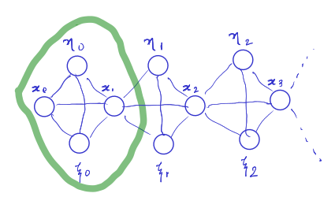

Zen¹ of Kalman filtering
२०१६-१०-०८ शनि:
Kalman filtering is often taught and understood in one of the following two ways:
- Recursive least squares.
- Bayesian updates with Gaussians state distributions.
I've found neither of these approaches to be satisfactory. Recursive least squares becomes rather troublesome algebraically when shoehorning the Kalman filtering into a simple 1-d online regression problem. The Bayesian way, while being elegant, is not exactly nice either. Part of the reason for this is because of dealing with the Bayesian updates symbolically rather than graphically. The language of Gaussian Graphical Models isn't of much use because of the linear constraints arising in the problem. This is rather pitiable because the purpose of the language is to separate in a modular fashion, the declarative description of the problem, and the actual tedious process used to solve/optimize it.
In this post I'll use the language of sparse linear algebra and QPs to sketch what is arguably the simplest derivation of Kalman filtering. Not only is such a framework useful pedagogically, but can also be used to readily extend filtering techniques and automate the generation of solvers for such problems. This approach allows one to think in terms of support graphs (and inference, tree-decompositions), without the relatively superfluous issues like positivity and normalization.
1. Kalman filter
Consider the following linear dynamics and observation functions, \[{\color{blue} x} = A {\color{blue} x^-} + B {\color{red} u^-} + {\color{blue} \eta},\] \[{\color{red} y} = H {\color{blue} x} + {\color{blue} \xi}.\]
Our starting point is the task of approximating terms in blue using the terms in red by minimizing the slack variables (noise) \({\color{blue} \eta}, {\color{blue} \xi}\). One can imagine accomplishing this by trying to minimize a cost-function which penalizes the \(\ell_2\) norm of these slacks. A general cost function of the following form is given by, \[{1\over 2} \Sigma_0^{-1} \cdot ({\color{blue} x_0} - \langle x_0\rangle)^{\otimes 2} + {1\over 2} \sum_{i = 0}^N \left(\Sigma_{\xi}^{-1} \cdot \xi_i^{\otimes 2} + \Sigma_{\eta}^{-1} \cdot \eta_i^{\otimes 2} \right),\] with the dynamics constraining all subsequent variables and slacks (where \(A \cdot x^{\otimes 2} \equiv x^T A x\)).
(Note: the above cost function corresponds to the assumption of normally distributed variables.)
Since the variables in the cost function are separable, the structure of the problem is dictated only by the constraints. The constraints, being first-order in nature, only entangle subsequent state variables and the slack variables. This corresponds to a support graph for the QP that is a chain, with a tree-width of 4.

The problem above a canonical equality-constrained QP. It's well known that the minimizer for the QP, \(\;\min_{x, Cx = d} {1\over 2} Q \cdot {x}^{\otimes 2} - b x\), is given by the solution to the KKT equation, \[\left[\begin{array}{c c}Q & C^T \\ C & 0 \end{array}\right] \left[\begin{array}{c}x \\ \lambda \end{array}\right] = \left[\begin{array}{c}b \\ d \end{array}\right],\] where \(\lambda\) denotes the Lagrange multiplier associated with the constraint \(Cx = d\).
Writing down the full KKT matrix for the KF problem is troublesome. It suffices however to consider only the minor corresponding to the first clique involving \(x_0, \eta_0, \xi_0, x_1\) and their associated dual variables \(\nu_0, \lambda_0\). The minor captures all the relations within the clique, and that of the interior of the clique to the boundary variable \(x_1\) (which will then be solved in the adjacent clique). \[\left[\begin{array}{c c c c c c} \Sigma_0^{-1} & & & & A^T & 0\\ & \Sigma_{\eta}^{-1}& & & I & 0 \\ & & \Sigma_{\xi}^{-1}& & 0 & I\\ & & & 0 & -I & H^T\\ A & I & 0 & -I & & \\ 0 & 0 & I & H & & &\\\end{array}\right] \left[\begin{array}{c} x_0\\ \eta_0\\ \xi_0\\ x_1\\ \nu_0\\ \lambda_0\end{array}\right] = \left[\begin{array}{c} \Sigma_0^{-1} \langle x_0 \rangle\\ 0\\ 0 \\ 0\\ -B {\color{red} u}\\ {\color{red} y} \end{array}\right]\]
It's easy to understand that since \(x_1\) is the only link to the rest of the QP, it can't yet be solved, but the others certainly can be written in terms of \(x_1\). Hence, we eliminate every other variable and pass a message onto \(x_1\), with the hope that once \(x_1\) is solved, so can those being eliminated prior to it. The message being passed is given essentially by taking the Schur-complement of \(x_0, \eta_0, \xi_0, \lambda_0, \nu_0\) onto \(x_1\), thus shrinking the chain from the left. Once this is done, we get a new "covariance" and "mean" on \(x_1\) which can now be used for its prediction. Rinse-repeat down the chain and you'll have yourself a Kalman filter.
2. Wait that's it ?
The only reason KF is so opaque (3) and incomprehensible is because the update equations are symbolically solving for 5-variables in a 6-variable linear equation. One may want to write it out for efficiency reasons, but one can also choose to take the easy way out with a single getrf/getrs call without losing too much (4) - this might in fact be slightly better conditioned.
From here on, it's not difficult to make other connexions,
- If we keep our promise to \(x_0\) and go back for it up the graph, after substituting the primal & dual values found downstream, we'd be performing what is known as smoothing. One could also do this only for a fixed window backward, thus gaining a better estimate of the trail immediately left by the system.
- If you pay keen attention, you'll realize this whole process is equivalent to doing a LU decomposition; that one of the
trsm's can be computed along with the decomposition. This is known in the Graphical models world as "Gaussian Belief Propagation", but there are restrictions imposed in this setting by the probabilistic nature of the model. - Note that there is nothing stopping us from having a model where everything is co-related - the \(\{x_0, \eta_0, \xi_0\}\) minor can be fully dense. This would be useful in cases such as robot-arms with end-effector sensors; joint noise in such systems translates via the state-dependent moment arm to the end-effector sensors.
- One can use Cholesky to eliminate the diagonal terms in the elimination process (3), and obtain a square-root filter.
- If we wanted to derive a Kalman predictor (\({\color{red} y} = H {\color{blue} x^-} + {\color{blue} \xi}\)), we'd have to solve instead the following system,
\[\left[\begin{array}{c c c c c c} \Sigma_0^{-1} & & & & A^T & H^T\\ & \Sigma_{\eta}^{-1}& & & I & 0 \\ & & \Sigma_{\xi}^{-1}& & 0 & I\\ & & & 0 & -I & 0\\ A & I & 0 & -I & & \\ H & 0 & I & 0 & & &\\\end{array}\right] \left[\begin{array}{c} x_0\\ \eta_0\\ \xi_0\\ x_1\\ \nu_0\\ \lambda_0\end{array}\right] = \left[\begin{array}{c} \Sigma_0^{-1} \langle x_0 \rangle\\ 0\\ 0 \\ 0\\ -B {\color{red} u}\\ {\color{red} y} \end{array}\right]\]
3. Symbolic elimination
Cranking the machinery is tough work, as anyone who has derived KF knows. Here's how the symbolic unrolling would work in the above context,
- Our minor for the clique, written as at tableau.
\[\left[\begin{array}{c c c c c c | c } \Sigma_0^{-1} & & & & A^T & 0 & \Sigma_0^{-1} \langle x_0 \rangle\\ & \Sigma_{\eta}^{-1}& & & I & 0 & 0\\ & & \Sigma_{\xi}^{-1}& & 0 & I& 0\\ & & & 0 & -I & H^T & 0\\ A & I & 0 & -I & & & -B {\color{red} u}\\ 0 & 0 & I & H & & & {\color{red} y}\\\end{array}\right] ; \quad \quad \mbox{variables} : \left(\begin{array}{c} x_0\\ \eta_0\\ \xi_0\\ x_1\\ \nu_0\\ \lambda_0\end{array}\right)\]
- Eliminate \(\{x_0, \eta_0, \xi_0\}\) to get,
\[\rightarrow \left[\begin{array}{c c c | c} 0 & -I & H^T & 0\\ -I & -\Sigma_{\eta} - A \Sigma_0 A^T & 0 & -(A \langle x_0 \rangle + B {\color{red} u}) \\ H & 0 & -\Sigma_{\xi} & {\color{red} y} \end{array}\right] ; \quad \quad \mbox{variables} : \left(\begin{array}{c} x_1\\ \nu_0\\ \lambda_0\end{array}\right)\]
- Elimintate \(\{\lambda_0\}\) to get,
\[\rightarrow \left[\begin{array}{c c | c} H^T \Sigma_{\xi}^{-1} H & -I & H^T \Sigma_{\xi}^{-1} {\color{red} y}\\ -I & -\Sigma_{\eta} - A \Sigma_0 A^T & -(A \langle x_0 \rangle + B {\color{red} u}) \end{array}\right] ; \quad \quad \mbox{variables} : \left(\begin{array}{c} x_1\\ \nu_0\end{array}\right)\]
- Eliminate \(\{\nu_0\}\) to get,
\[\rightarrow \left[\begin{array}{c | c} S_x^{-1} + H^T \Sigma_{\xi}^{-1} H & S_x^{-1} (A \langle x_0 \rangle + B {\color{red} u}) + H^T \Sigma_{\xi}^{-1} {\color{red} y}\\ \end{array}\right] ; \quad \quad \mbox{variables} : \left(\begin{array}{c} x_1 \end{array}\right)\] where \(\boxed{S_x = \Sigma_{\eta} + A \Sigma_0 A^T}\).
Now putting our probability hat on, using the relation between information form \(\mathcal{N}^{-1}(h, J) = \mathcal{N}(J^{-1} h, J^{-1})\) and the matrix inversion lemma, \[\boxed{\Sigma_1} = (S_x^{-1} + H^T \Sigma_{\xi}^{-1} H)^{-1} = S_x - S_x H^T (\Sigma_{\xi} + H S_x H^T)^{-1} H S_x = \boxed{(I - K H) S_x},\] where the Kalman gain is given by \(\boxed{K = S_x H^T (\Sigma_{\xi} + H S_x H^T)^{-1}}\).
\[\boxed{\langle x_1 \rangle} = (I - K H) \left[(A \langle x_0 \rangle + B {\color{red} u}) + S_x H^T \Sigma_{\xi}^{-1} {\color{red} y}\right] = (A \langle x_0 \rangle + B {\color{red} u}) + - K \langle y \rangle + S_x H^T \Sigma_{\xi}^{-1} y - K ( H S_x H^T + \Sigma_{\xi} - \Sigma_{\xi}) \Sigma_{\xi}^{-1} y = \boxed{(A \langle x_0 \rangle + B {\color{red} u}) + K ({\color{red} y} - \langle y \rangle)},\] where \(\langle y \rangle = H (A \langle x_0 \rangle + B {\color{red} u})\).
As mentioned before, once solving linear equations is understood, the process shown above is trivial (i.e well-understood, not not-tedious). The above process does however require a working knowledge of the probabilistic forms and the Woodbury identity, but this is only necesssary in order to obtain the KF equations. The next section completely gets rid of this latter process and makes the solution process a part of a LAPACK routine.
4. Lazy man's KF
Okay, I guess the path to the KF equations involves some usage of the Woodbury matrix identity, but do you really need these expressions ? May be you don't want to be super-efficient, or may be you just want something you know you won't mess up, or may be you're just sick of writing BLAS/LAPACK calls. Whatever your reason, fret not ! There is hope!
In the information form, the posterior is given simply by, \[J_1 = - W^T Q^{-1} W, \quad h_1 = - W^{T} Q^{-1} z,\quad\quad \quad \Sigma_1 = J_1^{-1}, \langle x_1 \rangle = J_1^{-1} h_1,\] where, \[Q = \left[\begin{array}{c c c c c} \Sigma_0^{-1} & & & & A^T\\ & \Sigma_{\eta}^{-1}& & & I\\ & & \Sigma_{\xi}^{-1}& & 0\\ A & I & 0 & & &\\ 0 & 0 & I & & &\\ \end{array}\right], \quad W = \left[\begin{array}{c} 0 \\0\\ 0\\ -I\\ H\end{array}\right], \quad z = \left[\begin{array}{c} \Sigma_0^{-1} \langle x_0 \rangle\\ 0\\ 0 \\ -B {\color{red} u}\\ {\color{red} y} \end{array}\right]\]
This can be seen as solving the minor in one-shot by reducing the variables \(\{x_0, \eta_0, \xi_0, x_1, \nu_0, \lambda_0\}\) together at once.
.1